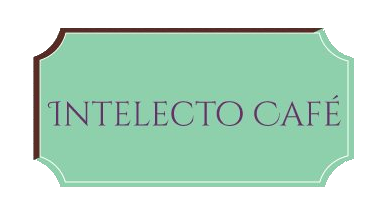
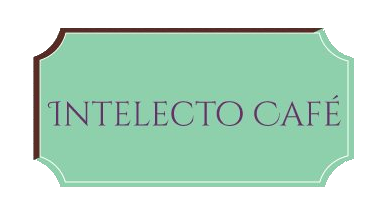

Sobre Nós
A ideia da Confeitaria Intelecto Café surgiu em Dezembro de 2014 quando 4 amigos, que faziam curso juntos e adoravam comer coxinha na padaria da esquina, decidiram abrir a sua própria confeitaria.
Os amigos Iury, Juliana, Marcos e Cristina decidiram que queriam uma confeitaria diferenciada com espaço confortável para leitura e boa música, surgindo assim o "Intelectoso" uma mistura de intelectual com gostoso.O primeiro ano da confeitaria foi um tremendo sucesso o que fez com que os amigos ganhassem o prêmio "Empreendedor do Ano de 2015" do Sebrae.
A Intelecto Café tem um ambiente climatizado, estacionamento próprio e um atendimento exclusivo. Venha conferir nossas delicias e deixar sua sugestão para a próxima playlist do dia.
Cristina 
Juliana Iury Marcos